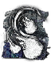

Descrição: Sortilégio criado pelos filhos da escuridão. Dispare diversos orbes de escuridão que buscam seu alvo.
Sortilégios que promovem uma ação transitória da escuridão existem desde os tempos antigos, e parece que os filhos da escuridão têm certa reminiscência do criador desses feitiços.
Localização:
Usos: 6
